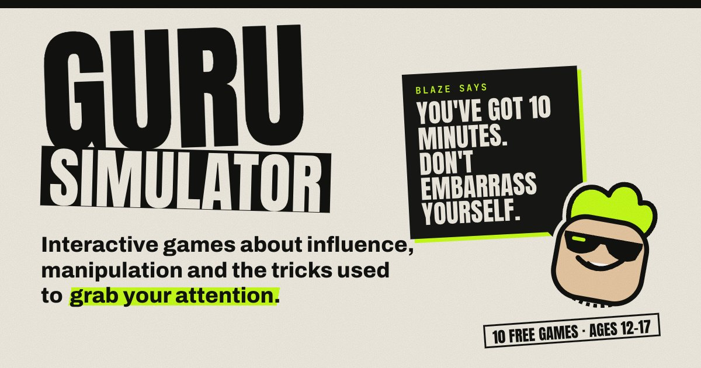

Designed with communities to cut admin, find funding, get seen and make organising easier.
You are the fabric that holds our communities together. But that shouldn't mean carrying everything alone.
A shared space for people building connection, belonging, and resilience in their communities.
Bringing together the people, organisations, and ideas that make Newquay special.
Guru Simulator is Community Fabric's interactive game series that helps young people recognise manipulation, persuasion and misleading online behaviour. We're building and testing it now with schools and communities.

Research into prebunking suggests that practising recognising manipulation techniques before encountering them can help build resistance to misinformation and manipulation.
Researchers at the University of Cambridge have explored this approach through games including Bad News and Go Viral!, finding that gameplay can improve people's ability to recognise manipulative misinformation.
Guru Simulator applies that idea to situations young people actually encounter: influencers, scams, social pressure, viral content and manipulation.
Across the communities we work with, misinformation, scams and online pressure are turning people against each other and leaving young people exposed. Guru Simulator sits alongside our training and digital tools as another way to build trust, critical thinking and connection.
Designed for classroom sessions that help pupils spot influencer tactics, scams and misleading content, with space to reflect and discuss.
A tool for youth clubs, community groups and local leaders to open conversations about online harm, exploitation and the pressures young people face.
It builds on our Tackling Narratives of Division and Digital Skills training, giving leaders a hands-on way to share what they learn.
Games can make digital manipulation something young people can experience and recognise.
Prebunking research gives us a reason to believe this approach is worth exploring.
We're applying those ideas to the situations young people actually encounter online.
Developing and testing now, with planned release for schools and educational settings.
Are you a school, youth group or community organisation interested in piloting Guru Simulator?
Talk to Us About a PilotPractical guides you can download and use straight away
A plain-English walkthrough of the governance basics every new charity or community group needs to get right from the start.
Download PDF →Step by step through a compelling funding application — what funders actually look for and the common mistakes to avoid.
Download PDF →Understanding your safeguarding responsibilities without drowning in jargon. Built for small teams doing meaningful work.
Download PDF →